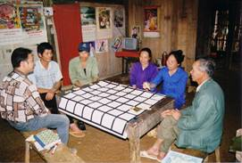

|
PAT, un jeu de
rôles sur l'évolution des règles d'accès à des
ressources soumises à une pression croissante
(application à une commune de la province montagnarde
de Bac Kan, nord Vietnam)
S.
Boissau, F. Sempé
 Motivation de la création
Ce jeu s'inscrit dans le cadre d'une recherche sur
l'évolution des règles d'accès aux ressources lorsque
celles-ci sont soumises à une pression croissante. Le
jeu a été créé spécifiquement pour une commune de la
province montagnarde de Bac Kan (nord Vietnam) où, suite
à un important programme de plantation de pins, la
surface de prairie disponible pour le pâturage des
buffles s'amoindrit considérablement. L'objectif du jeu
est de comprendre comment les agriculteurs-éleveurs font
face à cette diminution de la ressource.
Description et spécificités
Le jeu réunit 5 joueurs autour d'un plateau de jeu
constitué par une grille (5 × 5 cases) représentant la
ressource et dont le niveau peut varier de 0 à 3. A
chaque tour de jeu, les joueurs doivent placer leurs
buffles sur le plateau, sachant que chaque buffle
consomme une unité de ressource. A la fin du tour, la
ressource se renouvelle d'une unité. Les joueurs peuvent
également acheter ou vendre des buffles auprès de
l'animateur. Au début du quatrième, sixième et huitième
tour, l'animateur retire 5 cases du plateau de jeu,
simulant ainsi la diminution de la ressource consécutive
aux plantations de pins. Les joueurs doivent alors gérer
leurs troupeaux de buffle pour s'adapter à la quantité
de ressource disponible.
Mise en oeuvre
Le jeu a été joué 4 fois dans 2 villages voisins de la
province de Bac Kan. Il a par la suite débouché sur un
modèle de simulation multi-agents tentant de reproduire
les comportements observés durant le jeu. Enfin, il a
été transformé en un jeu informatique pouvant être joué
en réseau. Dans sa version informatique, et avec un
scénario différent baptisé "jeu des amis", il a donné
lieu à une expérience de modélisation par les joueurs
eux-mêmes avec les étudiants de l'Institut de la
Francophonie pour l'Informatique (IFI) à Hanoi.
Références
- Boissau, S.; Sempé, F.; Drogoul, A.; Bousquet, F.
(2005). "Friends and Buffaloes: The self-modelling
hypothesis". Submitted to ESSA 2005 Conference.
- Boissau, S. (2003). "Co-evolution of a research
question and methodological development: an example of
companion modeling in northern Vietnam". Paper
presented at the International Workshop on Multi-Agent
Systems for Integrated Natural Resources Management,
Chiang Mai, Thailand, 18-20 October 2003.
Pour en savoir plus, contactez
l'auteur.
|
|